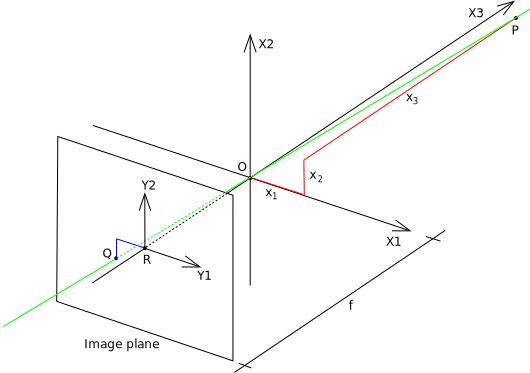
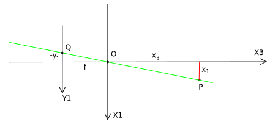

Camera matrix
The camera or projection matrix is a $3\times 4$ matrix, $\mathbf{C}$, that describes an ideal pinhole camera (i.e., the aperture is a point and no lenses focus light). It maps 3D points from the world (world coordinates / space) to 2D points on an image (image coordinates / space). Given two points, and representing homogenous points in image and world space, respectively, we can write their relationship as
where $\sim$ indicates equality up to a non-zero scalar multiplication. Wikipedia provides the following geometry:

- A 3D orthogonal coordinate system with its origin at $\mathbf{O}$. This is also where the camera aperture is located. The three axes of the coordinate system are referred to as $X1$, $X2$, $X3$. Axis $X3$ is pointing in the viewing direction of the camera and is referred to as the optical axis, principal axis, or principal ray. The 3D plane which intersects with axes $X1$ and $X2$ is the front side of the camera, or principal plane.
- An image plane where the 3D world is projected through the aperture of the camera. The image plane is parallel to axes $X1$ and $X2$ and is located at distance $f$ from the origin $\mathbf{O}$ in the negative direction of the $X3$ axis. A practical implementation of a pinhole camera implies that the image plane is located such that it intersects the $X3$ axis at coordinate $-f$ where $f > 0$. $f$ is also referred to as the focal length of the pinhole camera.
- A point $\mathbf{R}$ at the intersection of the optical axis and the image plane. This point is referred to as the principal point or image center.
- A point $\mathbf{P}$ somewhere in the world at coordinate relative to the axes $X1$, $X2$, $X3$.
- The projection line of point $\mathbf{P}$ into the camera. This is the green line which passes through point $\mathbf{P}$ and the point $\mathbf{O}$.
- The projection of point $\mathbf{P}$ onto the image plane, denoted $\mathbf{Q}$. This point is given by the intersection of the projection line (green) and the image plane. In any practical situation we can assume that $x_3 > 0$ which means that the intersection point is well defined.
- There is also a 2D coordinate system in the image plane, with origin at $\mathbf{R}$ and with axes $Y1$ and $Y2$ which are parallel to $X1$ and $X2$, respectively. The coordinates of point $\mathbf{Q}$ relative to this coordinate system is $(y_1, y_2)$.
We want to relate $\mathbf{P}$ in world coordinates, to $\mathbf{Q}$ in image coordinates, . We can do so by examining the above figure from the $X2$ and $X1$ axes. From the $X2$ axis:

Using similar triangles, we note that
and, looking from positive $X1$,
so we have
Because the image projected onto the image plane is rotated by 180º, we can rewrite the above as below to right the image:
The camera matrix describes this transformation. However, the camera matrix operates on homogenous coordinates because we want to be able to represent more complex transformations (e.g., affine transformations). Rewriting the relationship betweej $\mathbf{P}$ and $\mathbf{Q}$ as homogenous coordinates:
We can rewrite this transformation as
The $3\times 4$ matrix is $\mathbf{C}$. We can further simplify $\mathbf{C}$ by multiplying it by $f$. $\mathbf{C}$ is relatively simple because we have chosen our 2D and 3D coordinate systems in a particular way (i.e., no rotation, aligned origins, same scale).
Camera calibration
References